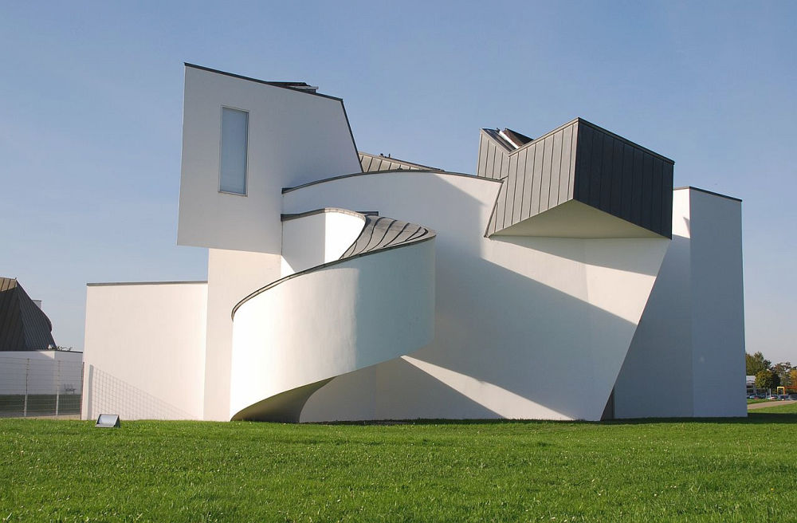

Powrót do strony głównej
Poznaj następny styl
Dekonstruktywizm
Dekonstruktywizm, zwany także dekonstrukcją, to rozpoczęta w późnych latach 80. XX wieku kontynuacja architektury postmodernistycznej. Odznacza się fragmentacją, manipulacją form i brył – dążą do zaburzenia konwencjonalnych rozwiązań. Charakteryzuje się nieprzewidywalnością i często sprawia wrażenie „kontrolowanego chaosu”. Końcowy efekt wizualny obrazowany przez budynki w wielu dekonstruktywistycznych „stylach” charakteryzuje się stymulującą nieprzewidywalnością i kontrolowanym chaosem.

Vitra Design Museum, Frank Gehry
Główne założenia dekonstrutywizmu:
Cechą charakteryzującą ten styl jest fragmentacja nowych form – odwracanie się od klasycznego rozumienia architektury jako zwartej bryły, na rzecz nietypowej i zachwianej konstrukcji. Obiekty dekonstruktywistyczne są więc pełne asymetrii, krzywizn, ciężkie do zaplanowania. Architekci raczkującego nurtu dekonstruktywizmu tworzyli swoistego rodzaju „ikony architektury jeszcze przed tym, nim ten ruch formalny stał się popularny i na trwałe wpisał się do kanonu współczesnych stylów architektonicznych.
Nazwa
Nazwa dekonstruktywizm oznacza dekonstrukcję, asymetryczne kształty, niestandardowe, kanciate, lub wręcz zaokrąglone budowle.
Imperial War Museum North w Manchesterze, Daniel Libenskind
Cechy budynku dekonstruktywistycznego:
Dekonstruktywizm we współczesnej architekturze przeciwstawia się racjonalności modernizmu. Jego związek z postmodernizmem też jest oparty na przeciwieństwie. Złożoność geometrii była zastosowana do funkcjonalnych, strukturalnych i przestrzennych aspektów budynków. Twórcy dekonstruktywizmu przekraczają granice. Dla przykładu: gdy wszyscy wybierają prostą linię, oni z pewnością wybiorą krzywą lub zakręconą. Krzywe ściany w budynkach, brak prostych konstrukcji budynków, nieprzewidywalne to cechy charakterystyczne dla dekonstruktywizmu. Architekci kierowali się maksymą sztuka dla sztuki.
Najpopularniejsi architekci dekonstruktywizmu:
Chcesz dowiedzieć się więcej o dekonstryktywizmie? Sprawdź Wikipedię, klikając tutaj.
Poznaj więcej budynków charakterystycznych dla dekonstruktywizmu:
|
Sala koncertowa Walt Disney, Frank Gehry
|
UFA-Palast w Dreźnie, Coop Himmelblau
|
|
Tańczący Dom w Pradze, Vlado Milunić i Frank Gehry
|
 Seattle Central Library,Rem Koolhaas i OMA
|